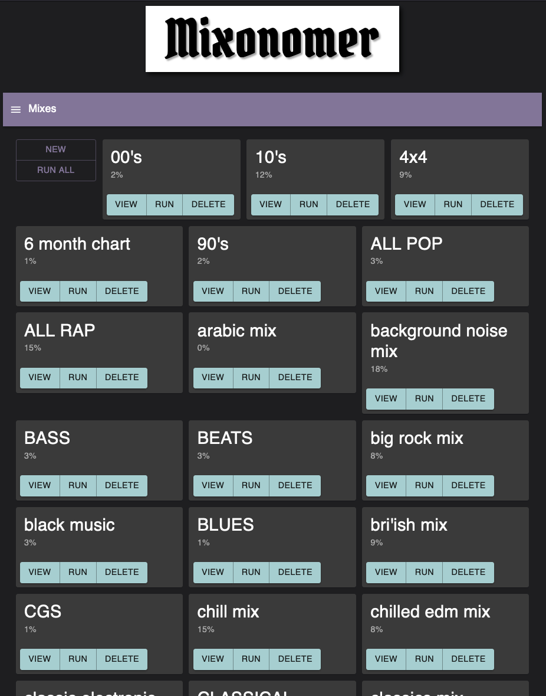

Music Tools¶
Contents:
Music Tools¶
Music Tools is a web app for creating smart Spotify playlists. The app is based on spotframework and fmframework for interfacing with Spotify and Last.fm. The app is currently hosted on Google’s Cloud Platform.
The backend is composed of a Flask web server with a Fireo ORM layer and longer tasks dispatched to Cloud Tasks or Functions. The frontend is a React app with material UI components and Axios for HTTP requests.
